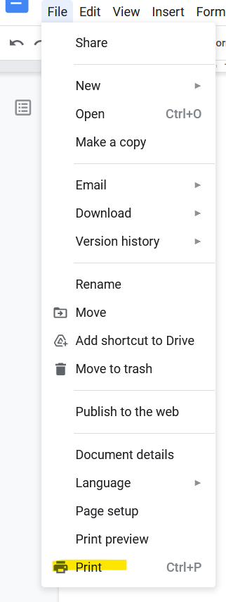
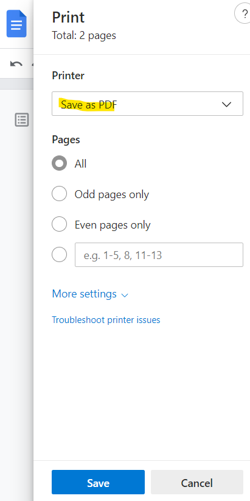

What you see is not what you get
This is mostly a rant of my experience working with Unicodes. Do not get me wrong, I love unicodes and the introduction of them have really changed the way we typed text, ranging from having non-english characters to supporting Emojis. What I do not understand is how inconsistent this experience seems to be.
For a little bit of context, this is what I was doing. I was editing my document on Google Docs, and feeling a little cheeky, I decided to use some emojis, 😄. What could ever go wrong with using them right? We are used to seeing it on our phones, messages, emails, desktop. So back to our little story, I decided to use some emojis, it does not matter which emoji but I am liking that particular design, which seems to be using Google's emoticon since it is rendered with Google Docs.
So here comes the part that caught me by surprise. I wanted to get a PDF document of the document I was working on, so I decided to use the download as PDF functionality in Google Docs. One can only assume that the PDF will exactly what you see is what you get, right? It turns out that, the downloaded PDF uses Microsoft's version of those emoticons, which happens to be slightly different from those used by Google.
In my mind, I was wondering, why did Google render the emoticon using Google's own style but uses the native OS's style when downloaded. Not sure if that's intended but I think it is definitely not intuitive. I understand Google Docs is no tool for designers, however all I am asking for is some consistency.
Anyways, later I did find a workaround to get the PDF document with the "correct" style of emoticon as I saw on Google Docs. This so called workaround does require you to be using some form of Chrome browsers which I assume most of you would be using by now. The way to get the PDF with Google's emoticon, is to click on Print.
After which, make sure that the options Save as PDF is selected instead of Microsoft Print to PDF. Choosing that option will render the emoticon as Microsoft's style. The PDF should now have the proper emoticon showing. Hopefully that works for you.
